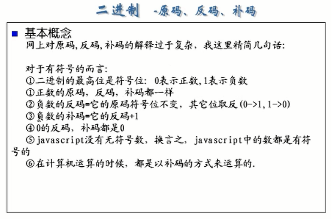

js课程介绍
javascript的介绍
① js是用于web 开发的脚本语言
脚本语言是什么？
1)脚本语言往往不能独立使用，它和html/php/asp/asp.net配合使用
2)脚本语言有自己的变量，函数，控制语句（顺序，分支，循环）
3)脚本语言实际上是解释性语言（即在执行的时候直接对源码进行执行）
4)java程序 js>>浏览器(js引擎来解释执行)
① js在客户端运行的
②因为js是由浏览器执行的，浏览器是有人开发的，有的可能不支持js，
所以要遵循W3C标准进行开发
③js开发工具的选择
1.记事本
2.eclipse（myeclipse）
案例1：
需求：打开一个网页，显示“hello world”
代码实现：
（1）js位置可以随意
（2）在一个html文件中（js/php/asp）可以多对出现
案例2：
对前面的程序，改进成一个简单的加法运算程序
代码实现：
01.js的引入方法：
02.js的变量声明：
使用var进行变量声明，规范要求，每次声明变量时，都要使用var
03.js的变量
js的变量究竟是怎样决定？
1.js是弱数据类型语言（即：在定义变量的时候，统一使用var表示，甚至可以去掉var这个关键字）
2.js中的变量的数据类型是js引擎决定的
js的几种变量类型
①数值类型：var a = 2;
var b = 3.14;
②字符串类型：var c = 'hello' ;
var d = "world" ;
③布尔类型：var e = true ;
④null 型：var f = null ;
⑤undefined型：var g = undefined ;
/* null 是代表对象不存在，在用DOM操作寻找DOM对象时，没找到，返回null
如果一个基本型没定义，理解为undefined */
/*数组的写法，英文[]包围，英文逗号隔开*/
通过typeof可以知道变量的类型
介绍window.prompt() 和document.write()
请编写一个程序，改程序可以接受两个数（可以是整数，也可以是小数），并判断两个数的大小？
04.js的运算符:
①加减乘除，与或非{&& || !(描述and，or，not)}，取余（%）
var a = 3;
var b = 2;
alert(a%3);//1
注意：%取余，主要用于整数型
var a=90;
var b=8;
if(a%b==0)
{alert('能整除');}
else{
alert('不能整除');
}
②拼接字符串用“+”
if(a < b){
alert(a + '<' + b);
}
//左往右加时碰到第一个非数值型之后，之后的运算就理解为字符串拼接。
alert(3 + 2 + 'hello' + 2 + 3 + 'world');//5hello23world
//逻辑运算符不同
var c = a||b;
console.log(c);//c在PHP中为true，在js中为a的值3。
var a = 0;
var b = 9;
var c = a||b;
console.log(c);//c在PHP中为true，在js中为b的值9。
//总结：逻辑运算的值是能确定运算的结果的单元的值
注意：

//条件运算
05.控制结构:
//for循环数组
var arr = ['赵','钱','孙','李'];
for (var i=0 ; i< arr.length ; i++){
console.log(arr[i]);
}
//循环对象
var obj = {'name':'lisi','age':29,'height':182};
for(var k in obj){//循环obj，把键分别赋给k
console.log(k);
console.log(obj.k);//错误
console.log(obj[k]);//正确
}
06.对象操作:
07.